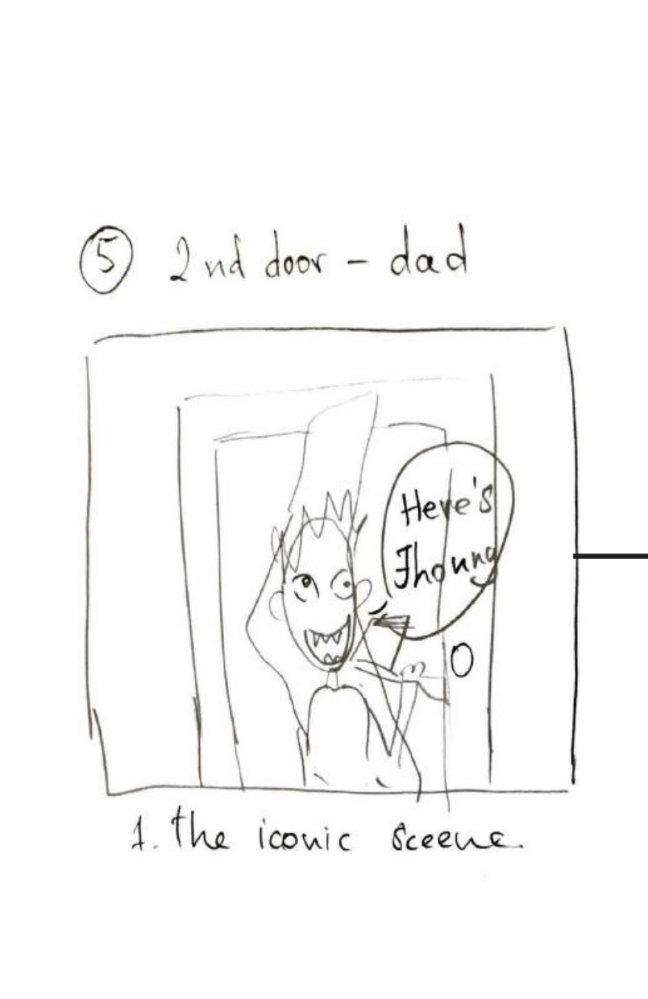
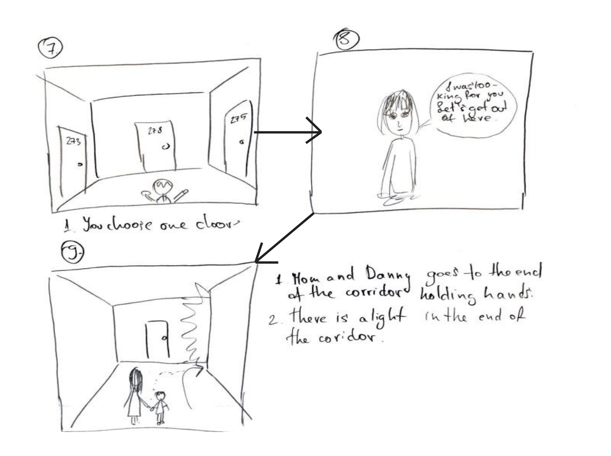

Short process documentation
Processing and documenting a project is a must when working on any task. To me, it was highly useful and I understood how important is to be. It had also helped on clearing the story and our direction of a story. All the group members worked equally and many changes were made through talking while making a documentation for it, but at the end everything was so clear we just had to follow the documentation.

